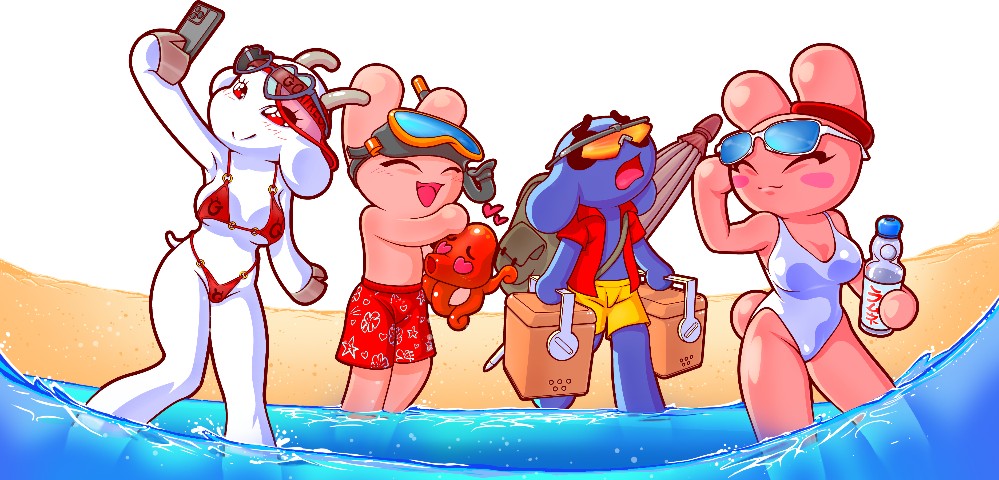
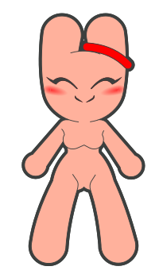
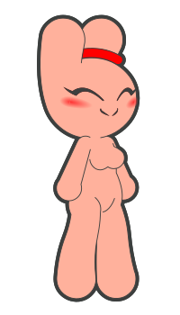
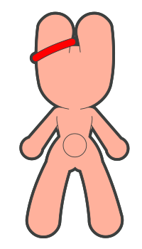
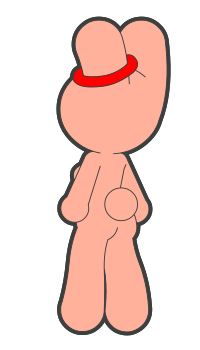
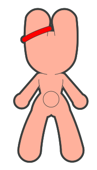
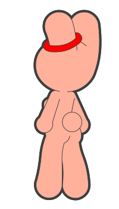
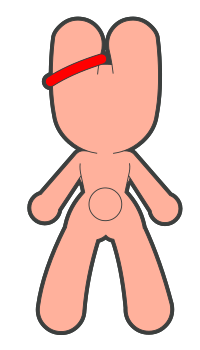
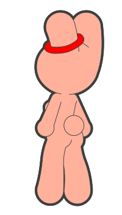

SHOP
STUDIO TANUKI MERCHANDISING
Shopify
Etsy
WATCH
BUNNY M. V.O.D. & S.T. TANUKI VIDEOS
Prime Video
Apple TV
Youtube
Twitch
Tik Tok
SEE
STUDIO TANUKI GALLERY
Fur Affinity
DeviantArt
Goatreon
(NSFW)
READ
STUDIO TANUKI NEWS & TRENDS
Twitter
BUNNY MALONEY
MAIN COMMUNITY
Instagram
Discord
Bluesky
Reddit
Facebook
JEAN FRANÇOIS !

 
 
ALL RIGHTS RESERVED
©STUDIO TANUKI / MEKO
Legal Notice
Contact
 





READ